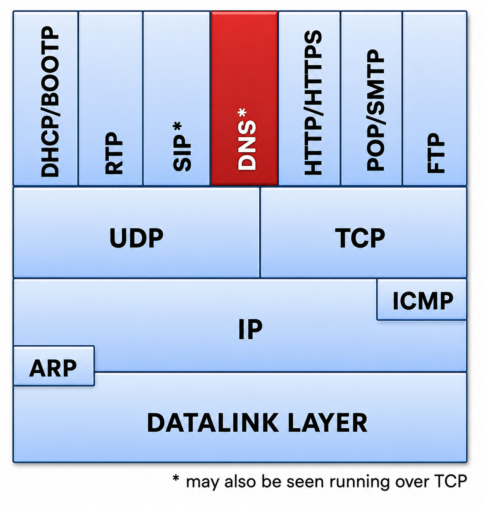
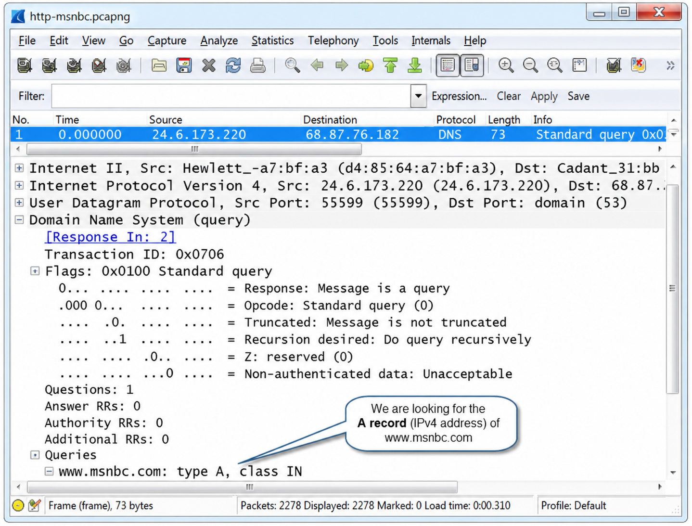
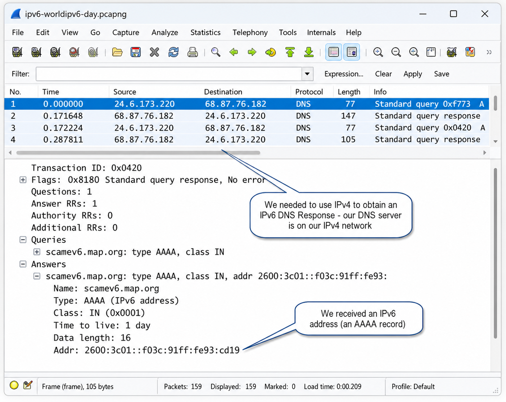
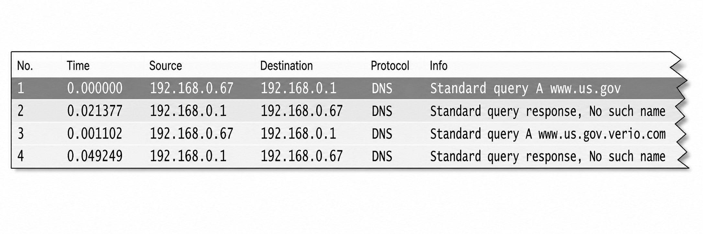
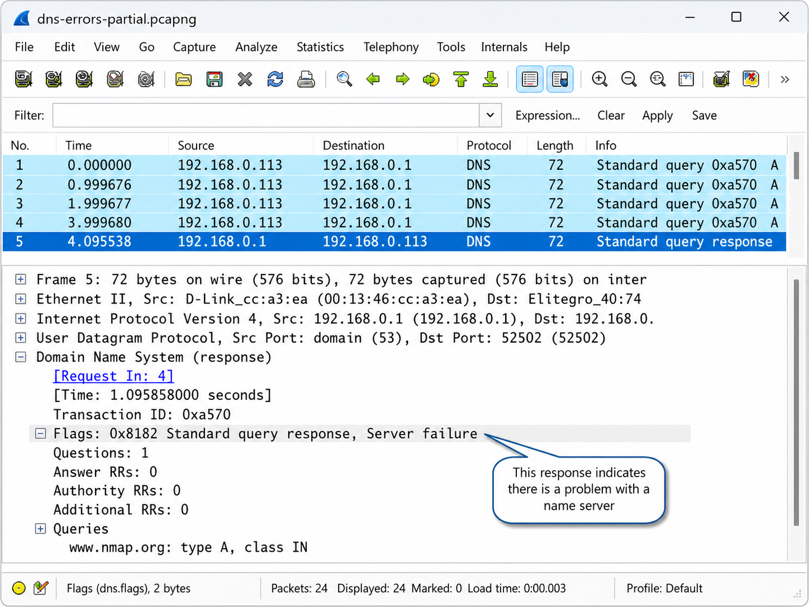
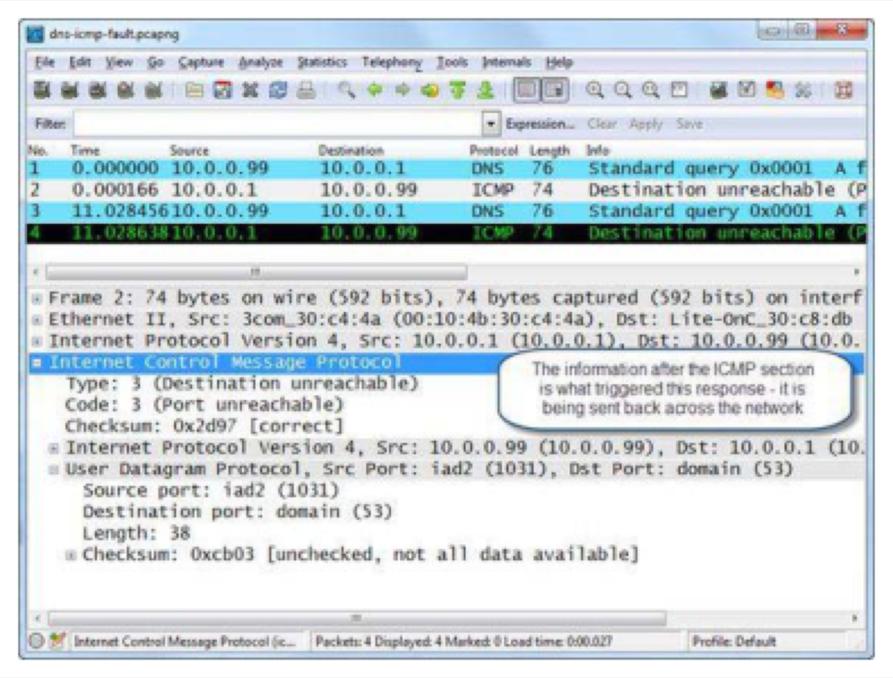
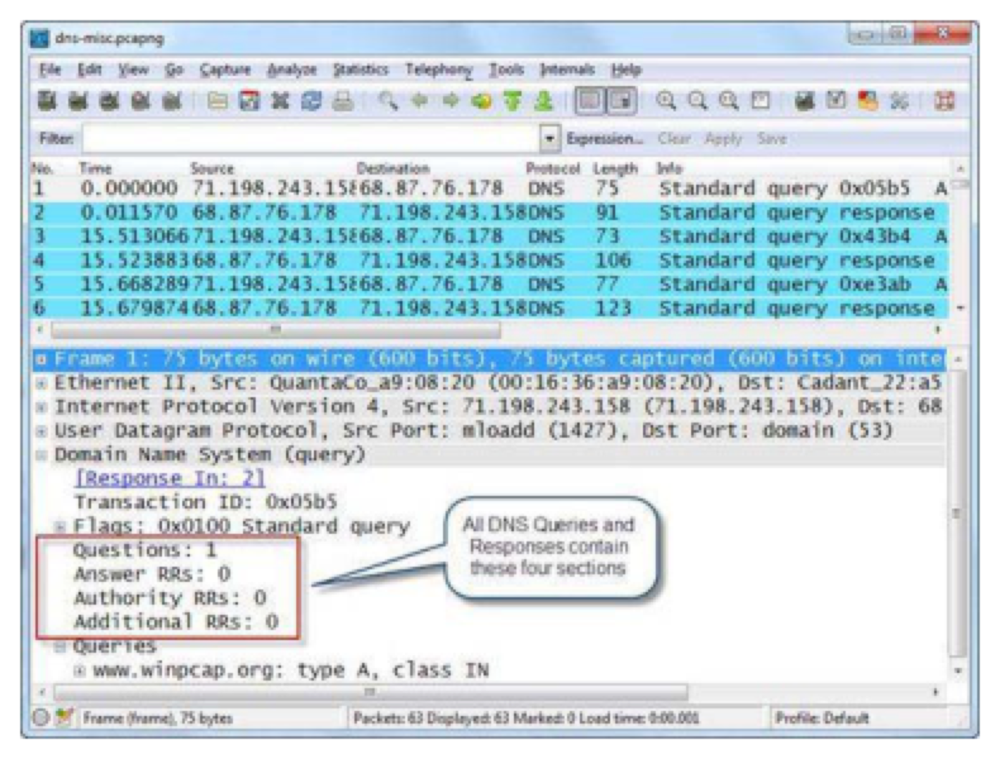
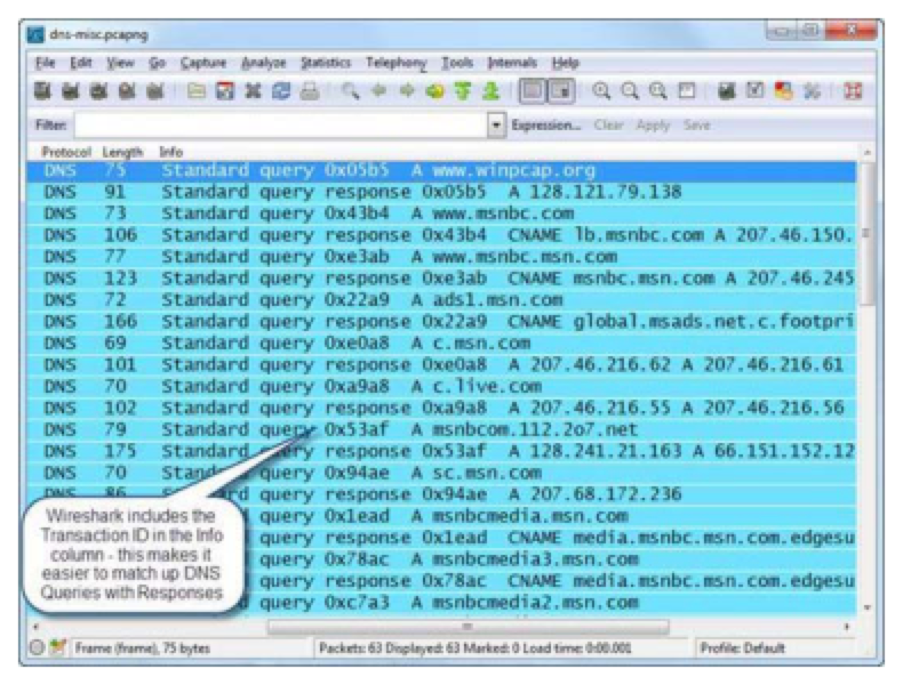
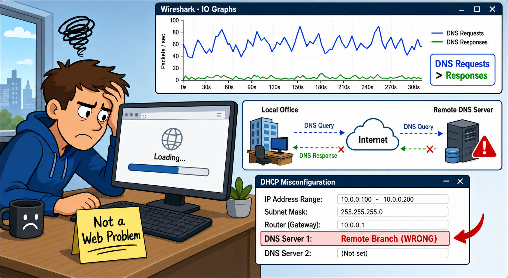

DNS most commonly uses UDP port 53. Under what two conditions does DNS switch to TCP instead, and what happens in the packet exchange when the switch occurs?
A CNAME (canonical name) record in a DNS response adds extra answers. If a client queries for www.msnbc.com and gets back both a CNAME (msnbc.com) and an A record (IP address), what is the Answer RR Count, and why?
DNS Purpose & Normal Queries
DNS is used to convert symbolic host names (such as www.wiresharktraining.com) to IP addresses. DNS can also transfer name information between DNS servers, identify host names associated with IP addresses (PTR queries) and look up Mail Exchange (MX) records. DNS is one of the most critical applications on the network — a DNS failure prevents hosts from locating each other by name.

DNS can run over UDP or TCP. Most DNS queries and replies use UDP port 53. Zone transfers run over TCP port 53. RFC 1035 limits DNS over UDP payload to 512 bytes — sufficient for most queries. When a response requires more than 512 bytes, the truncation flag bit is set in the response, triggering the resolver to retry using TCP. RFC 2671 (EDNS0) extends this to allow larger UDP payloads.
Multicast DNS (mDNS) provides name resolution for smaller networks without a DNS server. Top-level mDNS names end with .local. Queries must be sent to the mDNS multicast address (224.0.0.251 or FF02::FB for IPv6). The display filter is dns which shows both DNS and mDNS traffic.
Analyze Normal DNS Queries/Responses
A client sends a DNS query to a DNS server asking for an IP address in exchange for a host name. The DNS server either responds directly (with cached information) or asks other DNS servers on behalf of the client (recursive queries). Figure 185 shows a standard DNS request for the A record (host address) for www.msnbc.com.

Figure 186 shows the DNS response. The response contains a CNAME (canonical name) — the true name is msnbc.com and the IP address for that host is 207.46.245.32. When a response includes CNAME information, you will typically see a count of two in the Answer RR Count: one for the CNAME and another for the IP address.
Figure 187 shows a DNS response to an AAAA record query for scanmev6.nmap.org on World IPv6 Day (8 June 2011). The host used IPv4 to discover the IPv6 address because it didn't know of a DNS server on its IPv6 network.

The most common DNS error is "Name Error" (Rcode 3) — the name doesn't exist. How is this different from a "Server Failure" (Rcode 2), and which requires you to move Wireshark to a different location to diagnose?
You capture DNS traffic and see ICMP Destination Unreachable/Port Unreachable responses to DNS queries. What does this tell you, and who is likely at fault — the client or the DNS server?
Analyze DNS Problems
The most common DNS problem is a Name Error response — the name does not exist in the name server database. This could be caused by entering an incorrect name or a new name that hasn't yet propagated. Figure 188 shows a user trying to browse to www.us.gov — the name server responds with no such name, then the client appends the parent suffix and tries again (also not found).

Server failure responses indicate the name server couldn't resolve the information for the client due to an internal error — often a timeout waiting for a recursive query response. Figure 189 shows server failure responses when trying to reach www.nmap.org. Note the Time column: the client waits 1 second before resending, then another 1 second, then approximately 2 seconds (doubling each time). Set the Time column to Seconds Since Previous Displayed Packet to easily evaluate client resend timers.

In Figure 190, the client sends DNS queries to 10.0.0.1 which replies with ICMP Destination Unreachable/Port Unreachable responses — indicating that port 53 is not open on that host. Either the client has the wrong DNS server IP address, or the DNS server daemon is not running on that host.

DNS Response Codes (Rcode)
| Rcode | Meaning |
|---|---|
| 0 | No error condition |
| 1 | Format error — query could not be interpreted |
| 2 | Server failure — server could not process query |
| 3 | Name error — domain name does not exist |
| 4 | Not implemented |
| 5 | Refused — name server refuses to perform function due to policy |
dns.flags.rcode != 0. Wireshark will show a yellow background (the != operator triggers this), but the filter works correctly — dns.flags.rcode can only apply to one field, unlike ip.addr or tcp.port.The Transaction ID field is used to associate DNS queries with responses. Since Wireshark 1.8, it appears in the Info column. Without this ID, how would you manually match a DNS query to its response in a trace file with hundreds of DNS packets?
The Recursion Desired flag in a DNS query tells the server it can use recursive queries. What's the practical difference between recursive and iterative queries from the client's perspective — which requires less work from the client?
DNS Packet Structure
All DNS packets use a single basic structure with four primary parts. Figure 191 shows a DNS name request:

As of Wireshark 1.8, the Transaction ID is included in the Info column to help match DNS queries with responses, as shown in Figure 192.

DNS Header Fields
| Field | Description |
|---|---|
| Transaction ID | Associates queries with responses. Filter: dns.id==0x05b5 |
| Query/Response bit | 0=query, 1=response. Filter: dns.flags.response==0 or ==1 |
| Opcode | Query type. 0000=standard query (most common) |
| Authoritative Answer | Response is from an authoritative server for the domain |
| Truncation | Response was truncated — client should retry over TCP |
| Recursion Desired | Server may use recursive queries on client's behalf. Filter: dns.flags.recdesired==1 |
| Recursion Available | Server supports recursion (in responses). Filter: dns.flags.recavail==1 |
| Rcode | Error condition (see table above) |
Common DNS Record Types
| Type | Name | Description |
|---|---|---|
| A | Host address | Maps hostname to IPv4 address |
| AAAA | IPv6 address | Maps hostname to IPv6 address |
| CNAME | Canonical name | Alias to another hostname |
| MX | Mail exchange | Mail server for the domain |
| PTR | Pointer record | Reverse DNS — IP to hostname |
| NS | Name server | Authoritative name server for domain |
| SOA | Start of Authority | Zone authority information |
DNS Display Filters
dns All DNS traffic (including mDNS) dns.flags.response==0 DNS queries only dns.flags.response==1 DNS responses only dns.flags.rcode != 0 DNS errors dns.count.answers > 5 Responses with more than 5 answers dns.qry.name=="www.abc.com" Query for specific hostname dns.qry.type==0x0001 Queries for A records (IPv4) dns.qry.type==0x000c Inverse/PTR queries
Case Study
A customer complained about slow web browsing — sometimes 10-15 seconds to load a website; other times sites wouldn't load at all. The problem had started overnight.
A full-duplex tap was placed between one of the more "outspoken" users and the local switch. When the user visited sites they'd been to before, browsing was fast — no DNS queries were needed because the IP addresses were in DNS cache. When asked to visit new sites, the problem became obvious.
For every page needing to be loaded, there were way too many DNS queries. Three DNS queries would go out to one DNS server, then a fourth query to a second DNS server. More requests than responses. Building a simple IO Graph comparing DNS requests (dns.flags.response==0) vs DNS responses (dns.flags.response==1) confirmed a higher number of requests than responses.
The IT staff recognized the issue: the primary DNS server was located at a branch office. The client's DNS queries were traveling across the Internet all the way to a remote office — and there were obviously some communication problems because they didn't get responses to many of these queries.
A review of the DHCP server showed that all local hosts were being pointed to the remote DNS server first — a misconfiguration. The problem really wasn't a web browsing problem — it was a name resolution problem.
Just a couple of minutes with Wireshark found the problem and identified a solution. Then the finger-pointing between the IT team began — that was the signal to close up the analyzer and start writing the report.

DNS is used to resolve name information. Most commonly, DNS requests and replies provide hosts with the IP address(es) associated with a name used by an application. DNS can also resolve mail exchange server names, IP addresses and more.
When the name resolver process is launched, a host must first look in local cache, then check a local hosts file, then generate a DNS request to a preconfigured DNS server. DNS requests can be recursive or iterative, as defined in the DNS flags field. DNS servers respond with a numerical Rcode — code 0 indicates success.
Review Questions
DNS offers a name resolution service. Most commonly, DNS is used to obtain the IP address associated with a host name, but it can also be used to discover the host name associated with an IP address (a PTR query), mail exchange server names and IP addresses and more.
DNS uses TCP as the transport for zone transfers and large DNS packets. If a DNS response is too large to fit into the default 512 byte DNS payload size limitation, the DNS server sets the truncation flag bit in the response. The resolver process generates a new DNS query over TCP.
A recursive query enables a DNS server to look up name information on behalf of the client — the server does all the work and returns the final answer. An iterative query provides the DNS client with the next DNS server to query if the answer is not available locally — the client must do the follow-up querying itself.
The four sections of DNS queries and answers are: (1) Questions, (2) Answer Resource Records, (3) Authority Resource Records, (4) Additional Resource Records.